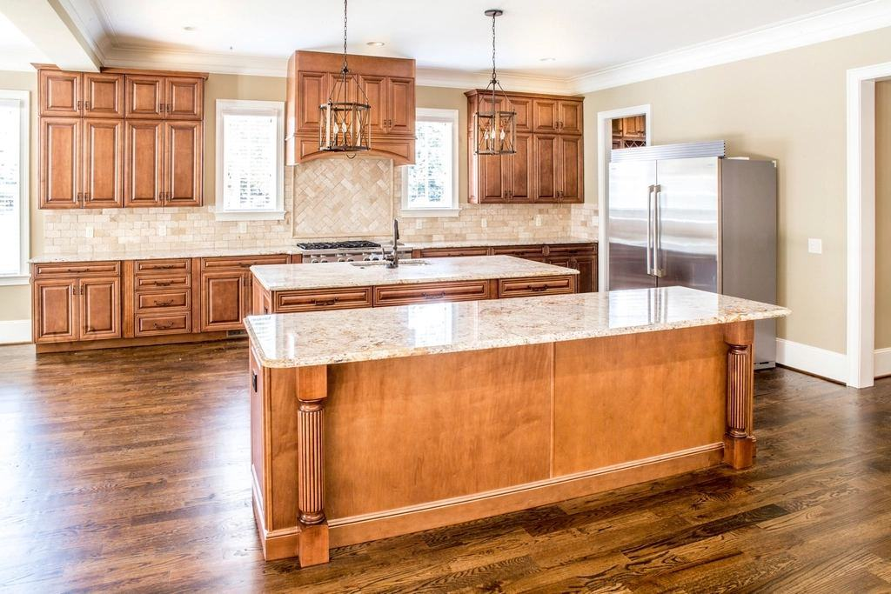
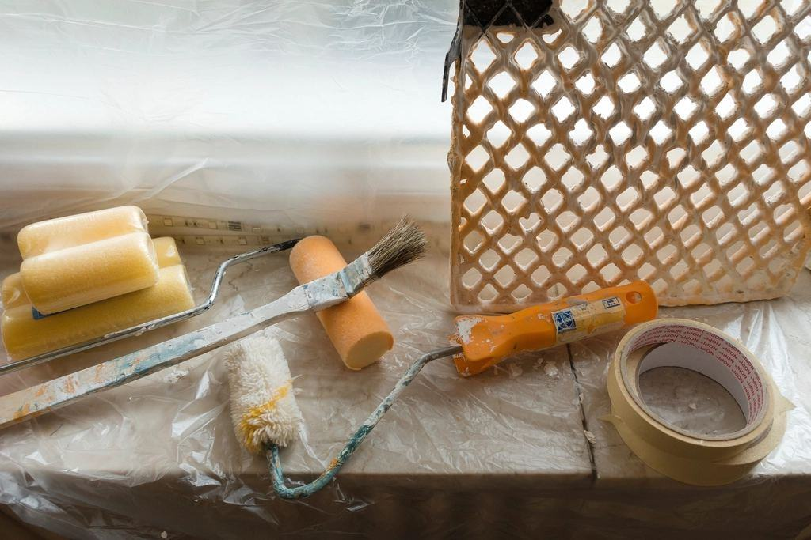
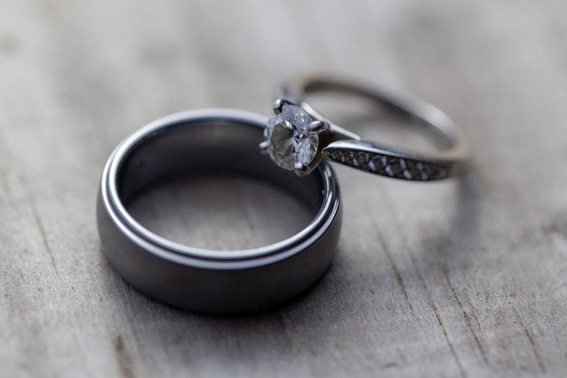

Referenser
Ett urval av uppdrag vi har utfört.
- 2026

Våning på Narvavägen
Matsal och salong med rekonstruerad bård från 1903 och nya limfärgstak.
- 2025

Brf Karlaplan 4
Marmorerade väggfält, ådrade portar och förgyllda bokstäver i entrén.
- 2025

Advokatfirman Granberg & Löw
Ådrade dörrar och handtryckt tapet i sju konferensrum.
- 2024

Villa Solbacka
Tretton rum, tre kakelugnar med förgyllning och 600 kvadratmeter limfärgstak.
- 2026

Speglar i Lärkstaden
Tre spegelramar från 1890-talet förgyllda med polerad vattenförgyllning.
- 2027

Våning på Strandvägen
Sju rum med stuckatur – samma våning som blev firmans första uppdrag 1991.
Från våningarna
Familjen L. · Narvavägen”De hittade en bård som ingen visste fanns. Våra gäster tror att den alltid har varit synlig.”
Styrelsen, Brf Karlaplan 4 · Östermalm”Pärmen med kulörer och metoder är det bästa någon hantverkare har lämnat efter sig i vårt hus.”
Kontorschef, Granberg & Löw · Norrmalm”Ådringen på dörrarna är så bra att våra klienter frågar vilket träslag det är.”